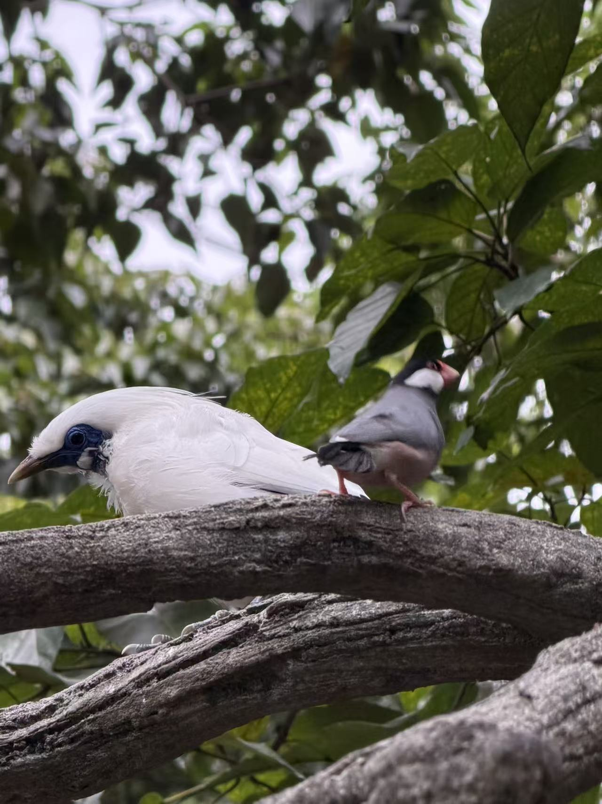

WELCOMEようこそ
WU JIAXU，天大港理工计算机系大一新生。 白天上课，深夜扫网。目前在建小网站 birdcloud，欢迎参观！
粉色系
薄巧绿
鸟
代码日记
「有些故事，只会对找到它的人开口。」
—— 图书馆窗边的笔记本 (´｡• ω •｡`)
NOW现在ing
现在的我，正忙着做一件事——设计 BirdCloud。 白天在 天大深 上课修习计算机， 傍晚去天台观鸟，深夜用 GitHub 搭建网站。 想看我的最新作品吗？
ING 01→天大深・计算机科学与技术 大一在读
ING 02→设计 BirdCloud 网页原型
ING 03→用 GitHub 发布第一版网站
ING 04→观鸟 & 漫画 充电中
BirdCloud —— 让每只鸟都被看见的云上小站
施工中・会不定期更新
GitHubHTML
CSS鳥
「代码和候鸟一样，总在某个季节找到自己的方向。」
—— BirdCloud 开发日志 Plan 01
TIMELINE物語
PLAN 01→踏入天大深校园
PLAN 02→港迪打卡~
PLAN 03→深圳湾观鸟打卡
PLAN 04→创建个人网页：)
???→故事继续中…
GALLERY図鑑

点击主图，翻开我的收集小屋 ✦
DIGITAL SELF // 电子屏幕背后的灵魂碎片
AI 检测中…